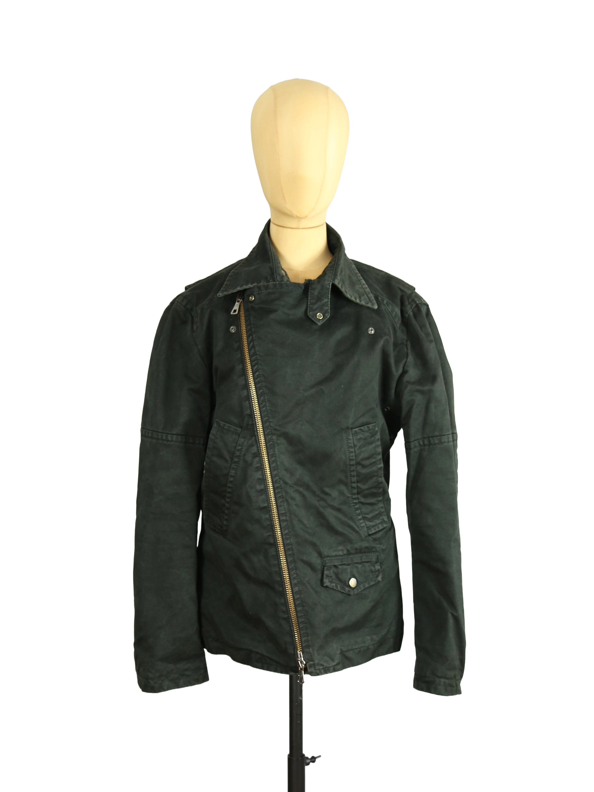

Dsquared2
280.00 €
Aus dem kuratierten Archiv von Disorder119. Diese asymmetrische Moto-Jacke von Dsquared2 stammt aus einer frühen Kollektion der 2000er Jahre und verbindet funktionale Workwear-Elemente mit einer klaren, avantgardistischen Linienführung. Der markante, diagonal verlaufende Frontreißverschluss definiert die Silhouette und erzeugt eine spannungsreiche, leicht versetzte Frontansicht. Das robuste Baumwollmaterial zeigt eine leicht gewachste, matte Oberfläche mit subtiler Patina, die dem Stück Tiefe und Charakter verleiht. Der Farbton bewegt sich zwischen tiefem Braun und nahezu schwarzer Nuance und wirkt je nach Licht unterschiedlich intensiv. Klassische Details wie aufgesetzte Taschen, Druckknöpfe und strukturierte Nähte werden durch die unkonventionelle Konstruktion neu interpretiert. Die Jacke sitzt körpernah mit klar geführten Schultern und einer geraden, leicht verkürzten Linie, wodurch
Im Archiv ansehen & in den Warenkorb →